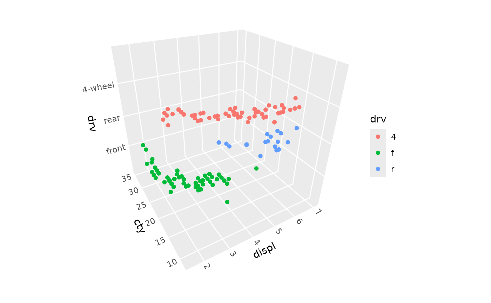

scale_z_discrete creates a discrete scale for the z aesthetic in 3D plots.
It works with categorical/factor data, positioning each level at integer coordinates
(1, 2, 3, ...) in 3D space.
Arguments
- name
The name of the scale, used as the axis title. Use
waiver()for the default, orNULLto omit the title.- breaks
One of:
NULLfor no breakswaiver()for all breaksA character vector of breaks
A function that takes the limits as input and returns breaks as output
- labels
One of:
NULLfor no labelswaiver()for the default labelsA character vector giving labels (must be same length as breaks)
A function that takes the breaks as input and returns labels as output
- limits
A character vector that defines possible values of the scale and their order.
- expand
A numeric vector of length two giving multiplicative and additive expansion constants. These constants ensure that data is placed some distance away from the axes. The defaults are to expand by 0.6 units on each side for discrete scales.
- guide
A function used to create a guide or its name. Since z-axis guides are not yet supported, this defaults to
"none".- na.translate
Unlike continuous scales, discrete scales can easily show missing values, and do so by default. If you want to remove missing values from a discrete scale, specify
na.translate = FALSE.- na.value
If
na.translate = TRUE, what aesthetic value should the missing values be displayed as? Does not apply to position scales whereNAis always placed at the far right.- drop
Should unused factor levels be omitted from the scale? The default,
TRUE, uses the levels that appear in the data;FALSEuses all the levels in the factor.- ...
Other arguments passed on to
discrete_scale().
See also
scale_z_continuous for continuous z-axis scaling,
coord_3d for the 3D coordinate system
Other 3D scale functions:
scale_z_continuous(),
zlim()
Examples
library(ggplot2)
# Basic usage to control order, breaks, labels, expansion, etc.
ggplot(mpg, aes(displ, cty, drv, color = drv)) +
geom_point() +
scale_z_discrete(limits = c("f", "r", "4"), # change default order
breaks = c("f", "r", "4"),
labels = c("front", "rear", "4-wheel"),
expand = expansion(.5)) +
coord_3d()
